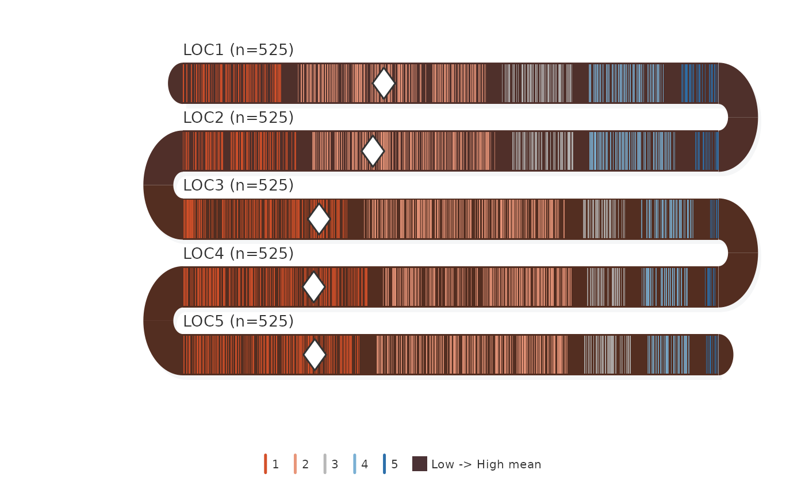

Each survey item is a horizontal band in a serpentine layout. The band body is shaded by item mean (warm = low, cool = high). Individual responses are shown as colored tick marks. Inter-item correlations appear at U-turns.
Usage
survey_snake(
counts,
labels = NULL,
levels = NULL,
var = NULL,
day = NULL,
timestamp = NULL,
level_labels = NULL,
band_height = 28,
band_gap = 18,
plot_width = 500,
tick_shape = c("line", "dot", "bar"),
bar_reverse = FALSE,
tick_opacity = 0.75,
level_gap = 15,
color_mode = c("level", "individual"),
colors = NULL,
shade_band = TRUE,
show_mean = TRUE,
show_median = FALSE,
show_correlation = TRUE,
jitter_range = 0.22,
sort_by = c("none", "mean", "net"),
shadow = TRUE,
label_color = "#333333",
label_size = 0.85,
label_align = "left",
show_legend = TRUE,
legend_text_size = 0.65,
arc_color = "#2c3e6b",
arc_opacity = 0.8,
arc_fill = c("none", "correlation", "mean_prev", "blend"),
band_palette = NULL,
start_from = c("left", "right"),
flow = c("snake", "natural"),
facet = FALSE,
facet_ncol = 2L,
title = NULL,
margin = c(top = 30, right = 10, bottom = 55, left = 100),
background = "white",
seed = 42L
)Arguments
- counts
Input in one of four formats:
Raw responses (data.frame) — each column is a survey item, each row is a respondent. Responses are auto-tabulated into counts.
labelsandlevelsare inferred from column names and unique values. Simplest usage:survey_snake(survey_df).Counts matrix — rows = items, columns = response levels.
Counts data.frame — coerced to matrix.
ESM / longitudinal data.frame — when
varandtimestampare provided, data is automatically pivoted by day. Each band becomes one day. Ticks are positioned by time-of-day.- labels
Character vector of item labels (length = nrow(counts)).
- levels
Character vector of level labels (length = ncol(counts)).
- var
Character, column name of the response variable for ESM mode. When provided with
day, data is auto-pivoted by period.- day
Character, column name for the day/period grouping variable (e.g.
"day"). Each unique value becomes one band.- timestamp
Character, column name of a POSIXct timestamp for ESM mode. When provided alongside
varandday, ticks are positioned by time-of-day within each band.- level_labels
Optional named character vector mapping raw level values to display labels (e.g.
c("1"="Str. Disagree", "5"="Str. Agree")). Applied to legend and any level-based text. If unnamed and same length as levels, used positionally.- band_height
Numeric (default 28).
- band_gap
Numeric (default 18).
- plot_width
Numeric (default 500).
- tick_shape
Character: "line" (default), "dot", or "bar" (stacked proportional bars with percentage labels).
- bar_reverse
Logical. When
TRUEandtick_shape = "bar", draw segments from the highest level (left) to the lowest (right). DefaultFALSE.- tick_opacity
Numeric 0-1 (default 0.55).
- level_gap
Numeric. Gap between response-level zones in plot units (default 15). Set to 0 for no separation.
- color_mode
Character, "level" (color by response level) or "individual" (unique hue per respondent). Default "level".
- colors
Character vector of colors for response levels. Default uses a diverging palette.
- shade_band
Logical. Shade band body by item mean (default TRUE).
- show_mean
Logical. Diamond marker at mean (default TRUE).
- show_median
Logical. Vertical line at median (default FALSE).
- show_correlation
Logical. Show Pearson r at U-turns (default TRUE).
- jitter_range
Numeric. Vertical jitter fraction (default 0.22).
- sort_by
Character: "none", "mean", or "net" (default "none").
- shadow
Logical (default TRUE).
- label_color
Character (default "#333333").
- label_size
Numeric (default 0.85).
- label_align
Character. Label alignment: "left" (default), "right", or "direction" (follows band reading direction).
- show_legend
Logical (default TRUE).
- legend_text_size
Numeric, legend text size (default 0.65).
- arc_color
Character (default "#2c3e6b").
- arc_opacity
Numeric (default 0.80).
- arc_fill
Character controlling arc fill style:
- "none"
(default) Two-tone split: upper half colored by the upper band's mean shade, lower half by the lower band's mean shade.
- "correlation"
Brown/blue tint by correlation sign, opacity scaled by |r|. The original behavior.
- "mean_prev"
Solid fill using the upper (preceding) band's mean shade.
- "blend"
Solid fill: 50/50 RGB average of adjacent band shades.
- band_palette
Character vector of 2+ anchor colors for the band shading gradient. Low item means map to the first color, high means to the last. Default
NULLuses the built-in brown-to-slate ramp. For darker plots tryc("#1a1228", "#1a2a42").- start_from
Character: "left" (default) or "right". Which side the first band starts from.
- flow
Character,
"snake"(default) or"natural"."snake"uses alternating boustrophedon direction;"natural"reads all bands in the same direction.- facet
Logical or named list. When
TRUE, columns are auto-grouped by their name prefix (e.g. LOC1-LOC5 → "LOC") and each group is drawn as a facet panel. A named list of column-name vectors gives explicit grouping. DefaultFALSE.- facet_ncol
Integer, number of columns in the facet grid (default 2).
- title
Optional plot title.
- margin
Named numeric vector.
- background
Background color.
- seed
Integer for reproducible jitter (default 42).
Examples
counts <- matrix(c(
110, 210, 79, 84, 42,
126, 205, 68, 100, 26,
184, 226, 47, 58, 10,
205, 210, 42, 53, 15,
197, 214, 53, 47, 14
), nrow = 5, byrow = TRUE)
labels <- paste0("LOC", 1:5, " (n=525)")
levs <- as.character(1:5)
survey_snake(counts, labels, levs)
